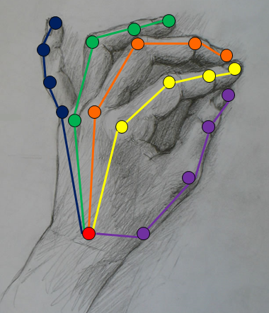
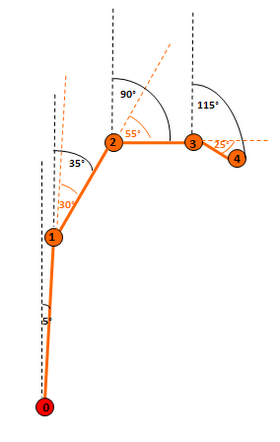

A joint’s rotation refers to the angle of the joint’s bone, which is the bone that ends at the joint and starts at the joint’s parent. The hand module expresses joint rotation in two ways:
| • | Local rotation – the angle between the joint’s bone and its parent’s bone. This value is stored in the localRotation property of JointData. |
| • | Global rotation – the angle between the joint’s bone and the camera coordinate system (Y axis). This value is stored in the globalOrientation property of JointData. |
Figure 34 and Table 10 illustrate the local and global rotation angles for the joints highlighted in orange. (Note that the diagram is a simplification, as it shows the rotation on a single axis rather than in quaternion values.)
 By convention, the local and global rotations of the root node (wrist = 0) are the same, to allow completeness of the local rotations data.
By convention, the local and global rotations of the root node (wrist = 0) are the same, to allow completeness of the local rotations data.
 |
 |
Figure 34: Local and Global Joint Rotation
Joint |
Local Rotation |
Global Rotation |
0 |
5 |
5 |
1 |
0 |
5 |
2 |
30 |
35 |
3 |
55 |
90 |
4 |
25 |
115 |
Table 10: Local and Global Joint Rotation